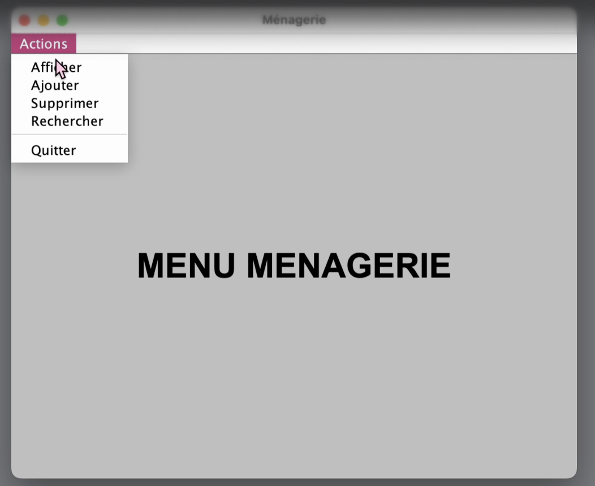

Projet Individuel
Projet Java en IHM
Avril 2025Projet Académique BTS SIO SLAM

Contexte
Réalisé en première année de BTS, ce projet met en œuvre les piliers de la Programmation Orientée Objet (POO). L'objectif était de créer une interface de gestion de bureau robuste, en séparant la logique métier de la couche de présentation graphique.
Besoins du projet
- Conception d'une interface graphique réactive avec Java Swing.
- Intégration d'un menu CRUD (Ajout, Lecture, Mise à jour, Suppression).
- Modélisation de classes métiers solides et extensibles.
- Gestion des écouteurs d'événements (ActionListeners) pour l'interactivité.
Technologies & Outils
 Java Core
Java Core
 Java Swing
Java Swing
 Eclipse IDE
Eclipse IDE
 UML / Merise
UML / Merise
Travail réalisé
- Conception : Création du diagramme de classes et définition des attributs/méthodes.
- IHM : Mise en place du Layout (GridLayout, BorderLayout) pour une interface propre.
- Validation : Tests unitaires sur les fonctionnalités de recherche et de tri.
- Livrable : Production d'une documentation technique et d'un guide utilisateur.
Bilan et Compétences
- Maîtrise avancée de la POO (Encapsulation, Héritage).
- Capacité à concevoir des interfaces Desktop ergonomiques.
- Rigueur dans la séparation des couches applicatives.
- Autonomie sur l'intégralité du cycle de développement.